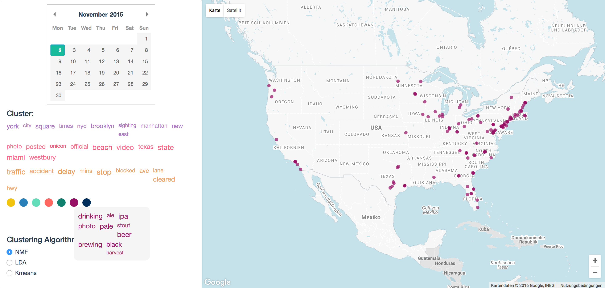

Twitter massages (Tweets) can be used to find geographically related information, various trending topics of interest and distribution of opinions. Analyzing the data of a specific region within a given sliding window and location can help to find currently important events or detect crisis. Goal of this project is the creation of a tool which is able to show the most important topics for a location. Thus after selecting a day and country, the application will show the top three trending topics for the chosen day.
The initial corpus of 750GB was a data set provided by the "Database Systems Group" of the LMU. The crawled tweets were all form the year 2015 and saved as raw json. Overall were 10 days missing in the corpus while the file size of a day was constantly decreasing from January.
As first step we filtered out all tweets without geo-coordinates, which reduced the file size we hand to handle drastically. All Tweets with less then 5 tokens were removed, while user references and URLs didn't count. The #Hashtag itself was counted and added as a token. To improve the clustering results we only used Tweets labeled as english language. Further the city and country of a Tweet were recalculated through reverse geocoding to get uniform locations. The finally saved data record looked this:
TwitterId | UserId | longitude, latitude | TweetText | CountryCode | CityId
We also removed the following:
def jaccard(a, b):
intersection = float(len(set(a) & set(b)))
union = float(len(set(a) | set(b)))
return intersection/union
After finishing the preprocessing we had 179.735.774 usable Tweets remaining.
Data is stored in a MySql Database and accessed through a PHP wrapper with post requests.
Technologies used for the user interface:
The interface consists out of an interactive GoogleMap, a datepicker as well as controls to select the cluster algorithm. A custom OverlayView containing geographic data is added to the Google Map. Users can select a combination of a country and a day they want to explore. Country borders, encoded in GeoJSON data, are rendered as SVG paths into the GoogleMaps overlay and can be selected through clicking on them. After selecting country and date, the top three clusters for this period of time are getting displayed on the left side of the screen. All the tweets belonging to the selected cluster get mapped onto the overlay as well. On mouseover events the textual content of the tweet gets displayed as a custom tooltip. 